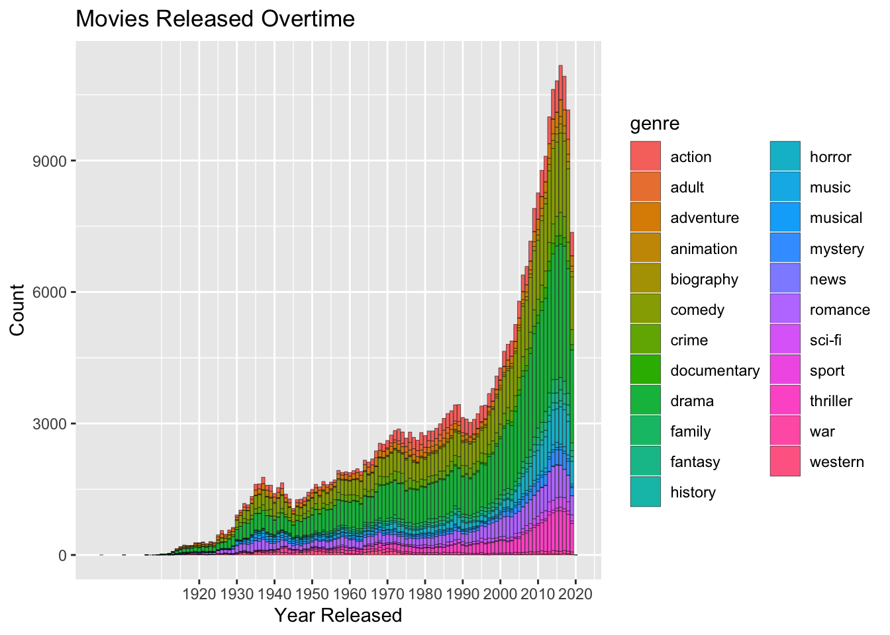
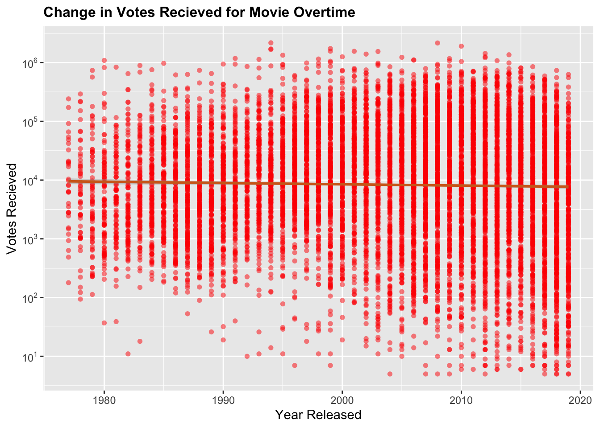
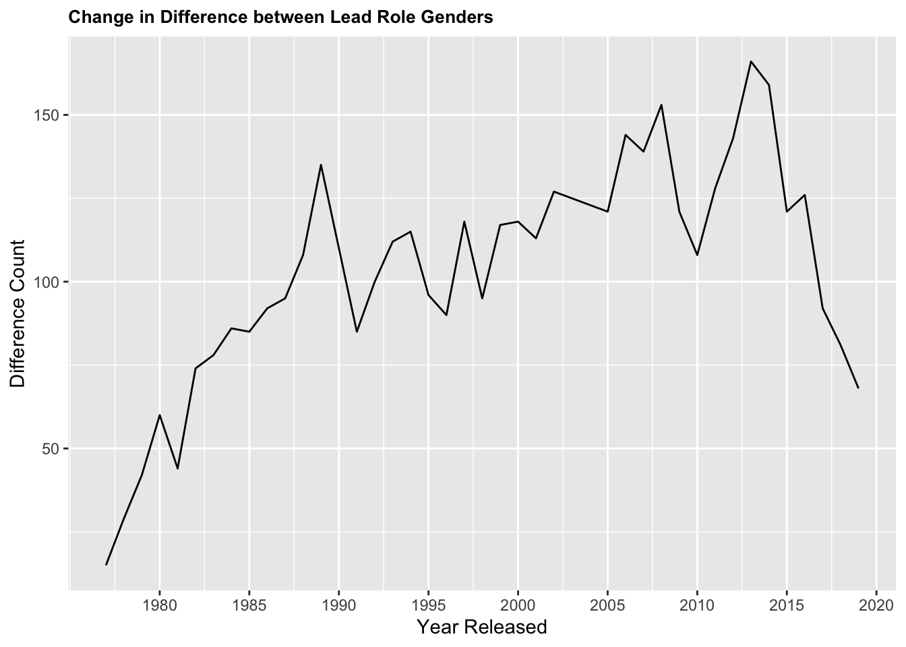
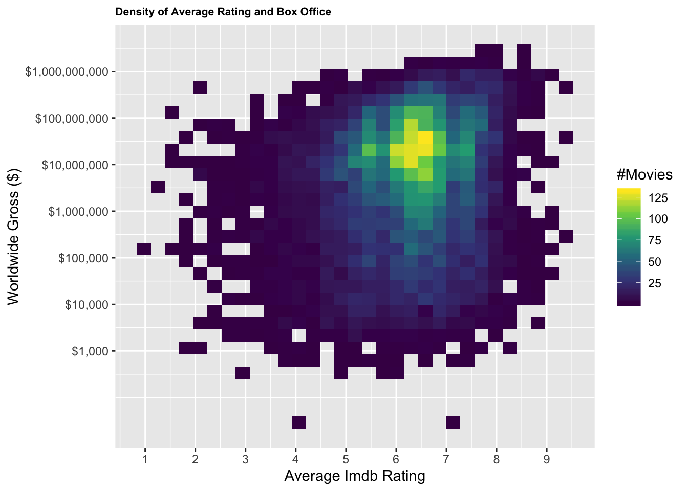

1 簡介
本次專案中，團隊企圖透過分析有關電影此一主題相關數據中隱含的訊息，得以檢驗一些我們日常生活中較直覺式的想法:譬如電影的出品量是否逐年提升? 近期出品的電影是否比以往出品的電影熱門?電影總是男主角?或是全球票房與平均用戶評分其實沒關係?
2 方法
資料取得 從著名的網路電影資料庫IMDB擷取自1977-2019的電影各項資料， 並自mojo爬蟲票房數據進行資料視覺化。
原始碼運作說明 團隊以R作為主要分析工具，配合dplyr、ggplot等套件，予以分析判讀。
3 結果

Figure 1: 電影數量成長趨勢

Figure 2: 電影歷年獲得評分數量趨勢

Figure 3: 男女主角歷年人數差異變化

Figure 4: 電影平均分數與票房的密度分佈
4 討論與貢獻
以下幾點是我們認爲本報告可以更詳盡的部分 1.在看男女主演那邊，主演我們每部電影只取網頁中cast第一位的演員，並沒有考慮到一部電影有超過一位的主演的狀況。 2.在分類電影類別的部分可以有更接近現實的分法，應該要給予每部電影2~3個genre去做交叉比對的分析 3.在八五年代以前，性別比例其實非常接近，但後來男性演員又大幅提升的現象，這可能是因為早期的資料蒐集並沒有很明確，因此才會讓性別比從低於八十的部分開始成長。
5 組員分工
洪譽家：資料探索、爬蟲、資料視覺化 胡凱昱：資料探勘、資料整理、資料視覺化 許國輝：製作海報，結果分析 江鈺崴：海報製作、結果分析